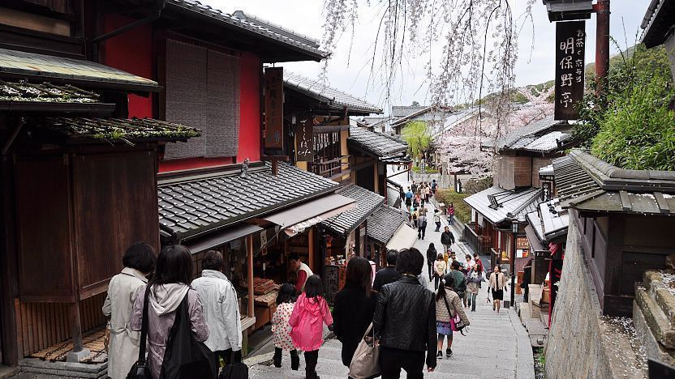

Japan, the Land of the Rising Sun
Entry #1: Higashiyama, Kyoto

Among all the different cities in Japan, Kyoto has to be one of the
prettiest. Among many of its cultural heritages, Kyoto leaves a
completely different feel when compared to the capital. The area I
found myself most mesmerized by is the Higashiyama district, also
known as old Kyoto. Many of the buildings here have been standing for
decades, and still, preserve the atmosphere of the feudal era. Walking
through the small alleyways, I found myself seeing a lot of people
wearing yukatas (the traditional Japanese attire worn in summer). I
was also wearing my yukata, which can be found commonly in rental
areas around Kyoto. Some many traditional shops and restaurants made
it feel very cozy yet ironically still very lively. I went from shop
to shop buying a multitude of traditional Japanese snacks like taiyaki
and bean-based treats while also grabbing a few souvenirs along the
way. It just takes you several years in the past, an experience rarely
felt in our 21st century.
Entry #2: Akihabara, Tokyo City
 Tokyo is a huge city, and there are many districts each with its
personality. Among famous places like the bustling Shibuya crossing or
the nightlife of the Shinjuku area, I found Akihabara to be the most
memorable place for me. This part of Tokyo is always bustling with
life, similar to what Times square feels like in New York City, but
with Japanese qualities. This area, known for its Otaku and pop
culture, contains many stores and entertainment from much different
anime and manga. As an anime enjoyer, this place was highly enjoyable
for me, as I brush past shops selling figurines and merchandise.
Furthermore, there were many arcades through the streets, which had
plenty of claw machines that I could never win. Luckily for me, I did
win a prize right before I ended my day here in Akihabara.
Tokyo is a huge city, and there are many districts each with its
personality. Among famous places like the bustling Shibuya crossing or
the nightlife of the Shinjuku area, I found Akihabara to be the most
memorable place for me. This part of Tokyo is always bustling with
life, similar to what Times square feels like in New York City, but
with Japanese qualities. This area, known for its Otaku and pop
culture, contains many stores and entertainment from much different
anime and manga. As an anime enjoyer, this place was highly enjoyable
for me, as I brush past shops selling figurines and merchandise.
Furthermore, there were many arcades through the streets, which had
plenty of claw machines that I could never win. Luckily for me, I did
win a prize right before I ended my day here in Akihabara.
Entry #3: Dotonburi, Osaka
I'd say you have not been to Osaka if you didn't go through Dotonburi
Area. This district is called the heart of Osaka and is an experience
you should never miss. The streets are littered with a huge variety of
restaurants and the buildings are covered in beautiful neon lights
along with the famous Glico Man. My day spent in Dotonbori left me so
full that walking home felt like a chore. The bottom line, the food
here is delicious. It is the best place to try different kinds of
Japanese food, and also stores that allow you to bring home Japanese
snacks for yourself. My favorite food to eat here was takoyaki, as the
cold winter made the hot squid ball taste even better. Though I burnt
my tongue right after eating my first bite, left me with sore taste
buds for the rest of my time in Dotonbori